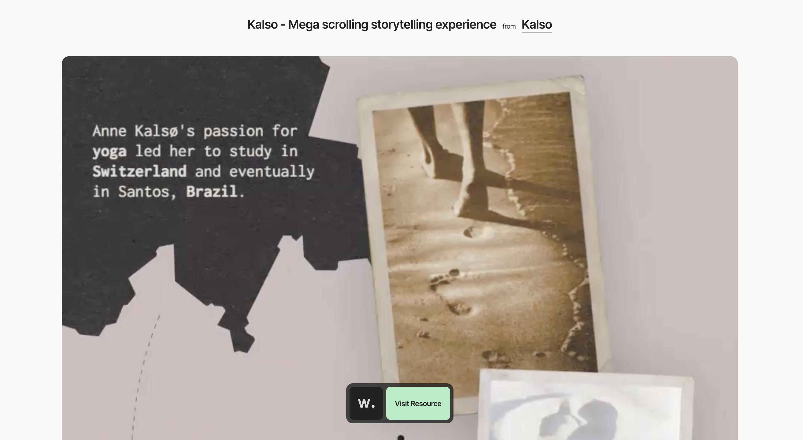
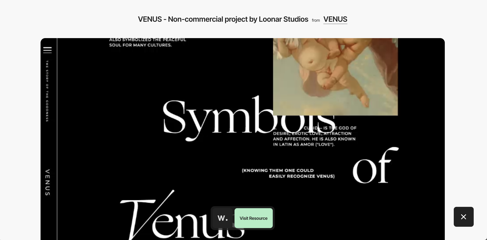

Capstone Project: Comparative Analysis
Kalso: Mega Scrolling Storytelling Experience
THe interface design is beautifully animated and flows into each scene well. As the user scrolls through each segment, the text and image elements pop onto the screen in fun ways that really immerse the user into the story. Overall, a great project that has me thinking more about what I can do for my own project.

Venus: Non-Commercial Project by Loonar Studios
The placement of text and the way the image elements appear on the page fit the theme of Venus well. What caught my attention was how they chunked each segment of text in a way that kept the user's attention moving around but did not feel disconnected. Overall, definitely a website I can learn from in terms of text-heavy projects.
